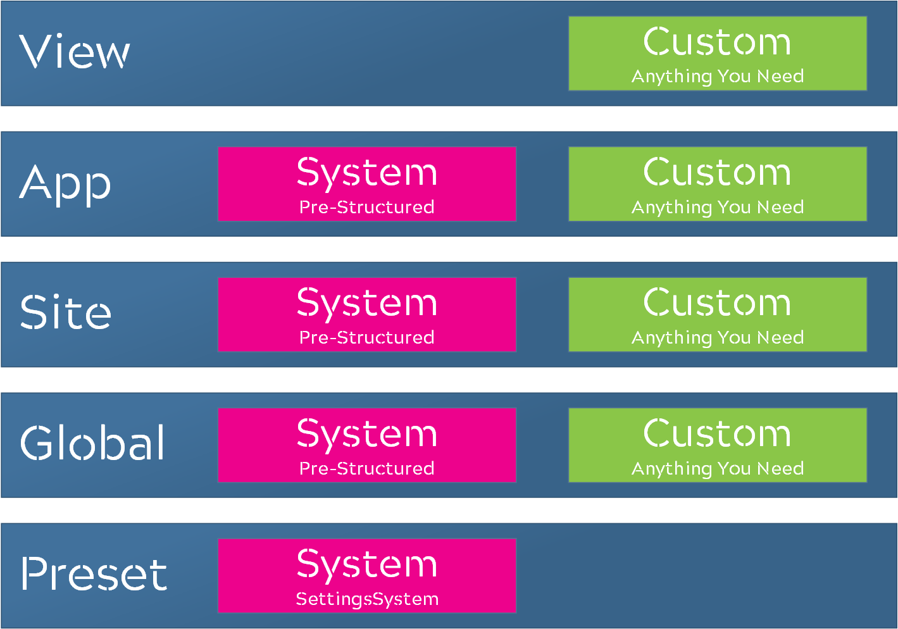
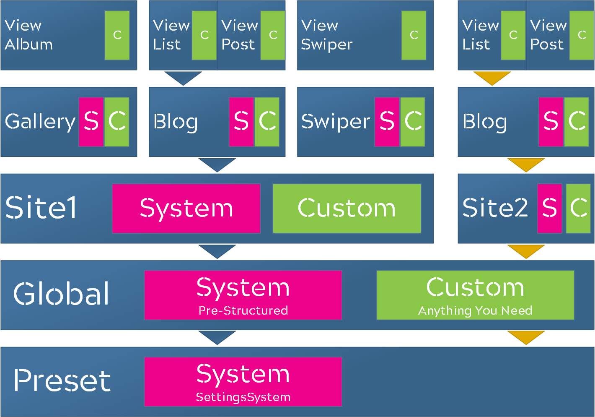
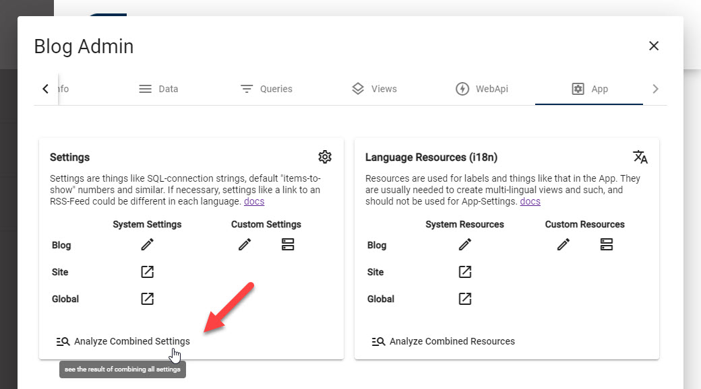
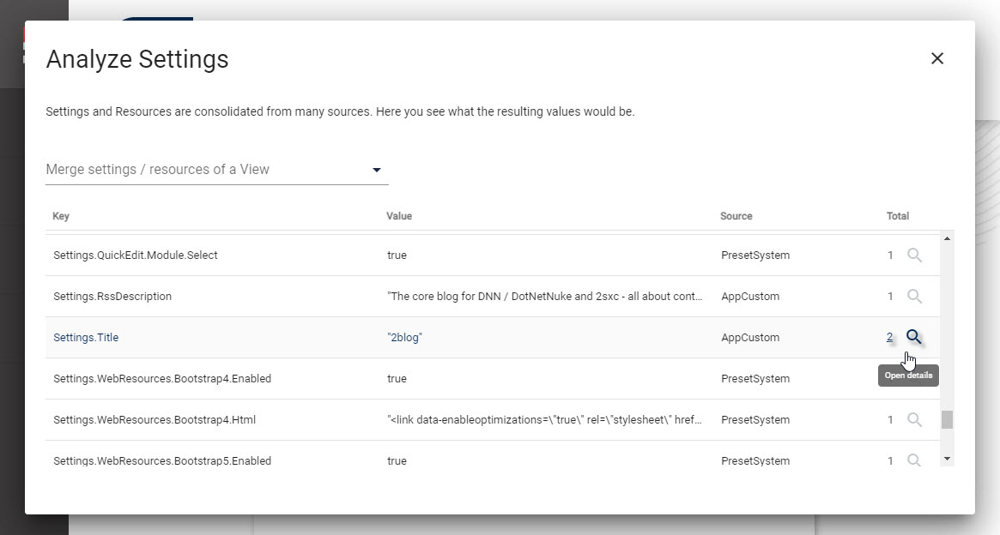

Settings Stack in 2sxc ✨ new!
Settings come in 2 distinct flavors:
- Standardized Settings use a content-type called
SettingsSystemwith a predefined structure.
These settings are meant to be used across tools and apps. - Dynamic Settings use a custom
App-Settingscontent-types which you define.
These settings can have any keys and values you want.
The effect/reach of this depends on the level where you add it (global, site, app). The code using these will usually come from you, as these settings are not standardized.
Settings can be edited on many levels. The most general or fallback settings are presets in 2sxc. The most specific settings only apply to a specific view.
In most cases your templates and code will simply want to get the most-relevant setting, no matter where it was configured. To make this possible, settings are treated as a stack. This is how it stacks up:
The most-relevant setting is top-most setting and is the one which will be used. So if a View setting and a Site setting have the same key, the View setting will be preferred. Take a look at this illustration:
Assume the Blog App has a List View which needs Settings.Images.Content.
The first Blog will look for it in the sequence of the blue arrows.
The second will look in the sequence of the yellow arrows.
So each Blog could get a different Setting, depending on where it is configured or overwritten.
Settings Sources and Priorities
The Settings are stacked in the following priority:
- ViewCustom - dynamic settings configured in the View
- AppCustom - the dynamic
App-Settings(see App-Settings) of an App - AppSystem - The
SettingsSystemin the current App - AncestorCustom - Optional, only on inherited Apps -
App-Settingson ancestor app (v13) - AncestorSystem - Optional, only on inherited Apps -
SettingsSystemon ancestor app (v13) - SiteCustom - an optional, manually created dynamic
App-Settingson the Primary App of the current site - SiteSystem - an optional
SettingsSystemin the Primary App of the current site - GlobalCustom - an optional, manually created dynamic
App-Settingson the Global System App - GlobalSystem - an optional
SettingsSystemon the Global System App - PresetSystem - the
SettingsSystemwhich are included in the installation of 2sxc
There is no setting called ViewSystem or PresetCustom.
Review the Settings-Stack
In case you need to see what setting applies to what view, you can easily analyze this in the App Administration.
There you can see each setting and what source it came from + you can analyze all the sources which configure this setting:
Next we'll explain where you can configure settings for different effects / scopes.
Global Settings which Affect All Sites
Global Settings for all sites are configured in the Global System App. It's usually on Zone 1 and App 1.
- go to the Global System App using this checklist.
- for Global System-Settings just edit them here
- for Global Custom-Settings just edit the App-Settings of the global app
Tip
This stuff is fairly new, and in rare cases new global settings don't automatically propagate to the sites. If you experience this, just restart the system.
As of now, this only affects new fields, so once a field has been available changes will propagate as expected.
Site Settings which Affect an Entire Site
These are configured in the Primary App of the site you want to configure.
- go to the Primary App of the Site using this checklist
- for Site System-Settings just edit them here
- for Site Custom-Settings just edit the App-Settings of this app
Tip
This stuff is fairly new, and in rare cases new site settings don't automatically propagate to the apps. If you experience this, just restart the system.
As of now, this only affects new fields, so once a field has been available changes will propagate as expected.
App Settings which Affect an Entire App
These settings override previous settings but only for a specific App.
- Go to the the App Configuration using this checklist
- for App System-Settings just edit them here
- for App Custom-Settings aka App-Settings you can edit them here or configure fields etc. directly from this dialog. Thisis feature has existed long before the stack was invented. See App Settings.
View Settings which Affect a specific View
As of v12.04 Views are only meant to have Custom Settings. It is still possible to override SystemSettings just by creating a field which has the same name, but we don't recommend it.
To create Custom View Settings, create a custom content-type in the Configuration scope and use it in the view. See View Settings (Advanced ⚠).
History
- Full Settings Stack introduced in 2sxc 12.04
- Dropped
SettingsCustomas a type in v13, as not needed any more because we changed how the site-level settings work - Added
AncestorCustomandAncestorSettingson v13 if the app inherits from an ancestor